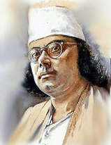
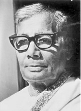
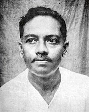
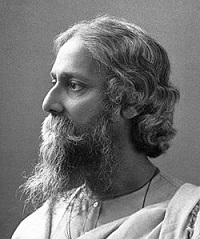
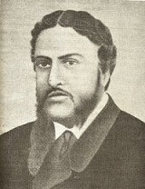

|  |
জন্ম তারিখ : ২৪ মে ১৮৯৯ জন্মস্থান : চুরুলিয়া, আসানসোল, পশ্চিমবঙ্গ মৃত্যু : ২৯ অগাস্ট ১৯৭৬ সমাধি : ঢাকা বিশ্ববিদ্যালয় চত্বর, ঢাকা, বাংলাদেশ |
কাজী নজরুল ইসলাম ১৮৯৯ সালের ২৪শে মে (১১ই জ্যৈষ্ঠ ১৩০৬ বঙ্গাব্দ) এক দরিদ্র মুসলিম পরিবারে জন্মগ্রহণ করেন। তাঁর প্রাথমিক শিক্ষা ছিল ধর্মীয়। স্থানীয় এক মসজিদে মুয়াজ্জিন হিসেবে কাজও করেছিলেন। কৈশোরে বিভিন্ন থিয়েটার দলের সাথে কাজ করতে গিয়ে তিনি কবিতা, নাটক এবং সাহিত্য সম্বন্ধে সম্যক জ্ঞান লাভ করেন। পরবর্তীতে তিনি বিংশ শতাব্দীর অন্যতম জনপ্রিয় বাঙালি কবি, সঙ্গীতজ্ঞ, সংগীতস্রষ্টা, দার্শনিক পরিচিতি লাভ করেন। তিনি বাংলা ভাষার অন্যতম সাহিত্যিক, দেশপ্রেমী এবং বাংলাদেশের জাতীয় কবি। তাঁর কবিতায় বিদ্রোহী দৃষ্টিভঙ্গির কারণে তাঁকে বিদ্রোহী কবি নামে আখ্যায়িত করা হয়েছে। তাঁর কবিতার মূল বিষয়বস্তু ছিল মানুষের ওপর মানুষের অত্যাচার এবং সামাজিক অনাচার ও শোষণের বিরুদ্ধে সোচ্চার প্রতিবাদ। মধ্যবয়সে তিনি পিক্স ডিজিজে আক্রান্ত হন। এর ফলে আমৃত্যু তাকে সাহিত্যকর্ম থেকে বিচ্ছিন্ন থাকতে হয়। একই সাথে মানসিক ভারসাম্য হারিয়ে ফেলেন। বাংলাদেশ সরকারের আমন্ত্রণে ১৯৭২ সালে তিনি সপরিবারে ঢাকা আসেন। এসময় তাকে বাংলাদেশের জাতীয়তা প্রদান করা হয়। ১৯৭৬ সালের ২৯শে অগাস্ট (১২ই ভাদ্র ১৩৮৩ বঙ্গাব্দ) এখানেই তিনি মৃত্যুবরণ করেন।
|  |
জন্ম তারিখ : ১ জানুয়ারী ১৯০৩ জন্মস্থান : তাম্বুলখানা, ফরিদপুর, বাংলাদেশ মৃত্যু : ১৩ মার্চ ১৯৭৬ সমাধি : গোবিন্দপুর, ফরিদপুর, বাংলাদেশ |
জসীমউদ্দীন (পুরো নাম জসীমউদ্দীন মোল্লা) একজন বিখ্যাত বাঙালি কবি। তিনি বাংলাদেশে পল্লী কবি হিসেবে পরিচিত। তার লেখা কবর কবিতাটি বাংলা সাহিত্যে এক অনন্য অবদান। তিনি ১৯০৩ সনের পহেলা জানুয়ারি ফরিদপুর জেলার তাম্বুলখানা গ্রামে জন্মগ্রহণ করেন। জসীমউদ্দীন ফরিদপুর ওয়েলফেয়ার স্কুল, ও পরবর্তীতে ফরিদপুর জেলা স্কুল থেকে পড়ালেখা করেন। এখান থেকে তিনি তার প্রবেশিকা পরীক্ষায় ১৯২১ সনে উত্তীর্ন হন। তিনি কলকাতা বিশ্ববিদ্যালয় থেকে বি. এ. এবং এম. এ. শেষ করেন যথাক্রমে ১৯২৯ এবং ১৯৩১ সনে। ১৯৩৩ সনে তিনি কলকাতা বিশ্ববিদ্যালয়ের রামতনু লাহিড়ী গবেষণা সহকারী পদে যোগদেন। এরপর ১৯৩৮ সনে ঢাকা বিশ্ববিদ্যালয়ে বাংলা বিভাগের প্রভাষক হিসেবে যোগ দেন। ১৯৬৯ সনে রবীন্দ্র ভারতী বিশ্ববিদ্যালয় কবিকে সম্মান সূচক ডি লিট উপাধিতে ভূষিত করেন। তিনি ১৩ মার্চ ১৯৭৬ সনে ঢাকায় মৃত্যুবরণ করেন। পরে তাকে তার নিজ গ্রাম বিমলগুহে সমাধিস্থ করা হয়।
|  |
জন্ম তারিখ : ১৭ ফেব্রুয়ারি ১৮৯৯ জন্মস্থান : বরিশাল, বাংলাদেশ মৃত্যু : ২২ অক্টোবর ১৯৫৪ |
জীবনানন্দ দাশ (জন্ম: ১৮ ফেব্রুয়ারি, ১৮৯৯, বরিশাল - মৃত্যু: ২২ অক্টোবর, ১৯৫৪, বঙ্গাব্দ: ৬ ফাল্গুন, ১৩০৫ - ৫ কার্তিক, ১৩৬১) বিংশ শতাব্দীর অন্যতম প্রধান আধুনিক বাংলা কবি। তিনি বাংলা কাব্যে আধুনিকতার পথিকৃতদের মধ্যে অগ্রগণ্য। মৃত্যুর পর থেকে শুরু করে বিংশ শতাব্দীর শেষ ধাপে তিনি জনপ্রিয়তা পেতে শুরু করেন এবং ১৯৯৯ খ্রিস্টাব্দে যখন তাঁর জন্মশতবার্ষিকী পালিত হচ্ছিল ততদিনে তিনি বাংলা সাহিত্যের জনপ্রিয়তম কবিতে পরিণত হয়েছেন। তিনি প্রধানত কবি হলেও বেশ কিছু প্রবন্ধ-নিবন্ধ রচনা ও প্রকাশ করেছেন। তবে ১৯৫৪ খ্রিস্টাব্দে অকাল মৃত্যুর আগে তিনি নিভৃতে ১৪টি উপন্যাস এবং ১০৮টি ছোটগল্প রচনা গ্রন্থ করেছেন যার একটিও তিনি জীবদ্দশায় প্রকাশ করেননি। তাঁর জীবন কেটেছে চরম দারিদ্রের মধ্যে। বিংশ শতাব্দীর শেষার্ধকাল অনপনেয়ভাবে বাংলা কবিতায় তাঁর প্রভাব মুদ্রিত হয়েছে। রবীন্দ্র-পরবর্তীকালে বাংলা ভাষার প্রধান কবি হিসাবে তিনি সর্বসাধারণ্যে স্বীকৃত।
|  |
জন্ম তারিখ : ৭ মে ১৮৬১ জন্মস্থান : জোড়াসাঁকো, কোলকাতা, ভারত মৃত্যু : ৭ অগাস্ট ১৯৪১ |
রবীন্দ্রনাথ ঠাকুর ১৮৬১ সালের ৭ই মে কলকাতার এক ধনাঢ্য পরিবারে জন্মগ্রহণ করেন। তিঁনি ছিলেন অগ্রণী বাঙ্গালী কবি, ঔপন্যাসিক, সঙ্গীতস্রষ্টা, নাট্যকার, চিত্রকর, ছোটগল্পকার, প্রাবন্ধিক, কন্ঠশিল্পী ও দার্শনিক। তাঁকে বাংলা ভাষার সর্বশ্রেষ্ঠ্য সাহিত্যিক মনে করা হয়। ১৯১৩ সালে গীতাঞ্জলি কাব্যগ্রন্থের জন্য তাঁকে সাহিত্যে নোবেল পুরস্কার প্রদান করা হয়। ইউরোপের বাহিরের প্রথম নোবেল পুরস্কার বিজয়ী হিসাবে তিনি বিশ্বে ব্যপক খ্যাতি লাভ করেন। দীর্ঘ রোগভোগের পর ১৯৪১ সালের ৭ই অগাস্ট জোড়াসাঁকোর বাসভবনে শেষ নিঃশ্বাস ত্যাগ করেন রবীন্দ্রনাথ ঠাকুর। তবে মৃত্যুর সাত দিন আগে পর্যন্ত তিঁনি সৃষ্টিশীল ছিলেন।
|  |
জন্ম তারিখ : ২৫ জানুয়ারী ১৮২৪ জন্মস্থান : যশোর, বাংলাদেশ মৃত্যু : ২৯ জুন ১৮৭৩ সমাধি : কোলকাতা, পশ্চিমবঙ্গ, ভারত |
মাইকেল মধুসূদন দত্ত ১৮২৪ সালের ২৫শে জানুয়ারি যশোরের সাগরদাঁড়ি গ্রামে জন্মগ্রহণ করেন। হিন্দু কায়স্থ বংশে জন্ম হলেও পরবর্তীতে তিনি খৃষ্টধর্ম গ্রহণ করেন। জীবনের প্রথম অংশে পশ্চাত্য সাহিত্যের প্রতি আকর্ষণের কারণে তিনি ইংরেজি ভাষায় সাহিত্য রচনা শুরু করেন। তবে পরবর্তীতে তিনি মাতৃভাষা বাংলায় লেখালেখিতে আকৃষ্ট হন। বাংলায় নাটক, প্রহসন ও কাব্য রচনার মাধ্যমে বাংলা সাহিত্যের অঙ্গনে তিনি উজ্জ্বল নক্ষত্র হিসাবে স্থান করে নিয়েছেন। বাংলা কাব্য রচনায় তিনিই প্রথম সনেট ও অমিত্রাক্ষর ছন্দের প্রবর্তন করেন। তাঁর সর্বশ্রেষ্ঠ কীর্তি হিসাবে অমিত্রাক্ষর ছন্দে রচিত মেঘনাদবধ কাব্য নামক মহাকাব্যকে বিবেচনা করা হয়। প্রথিতযশা এই কবি ১৮৭৩ সালের ২৯শে জুন মাত্র ৪৯ বছর বয়সে কোলকাতায় কপর্দকশূন্য অবস্থায় মৃত্যুবরণ করেন।